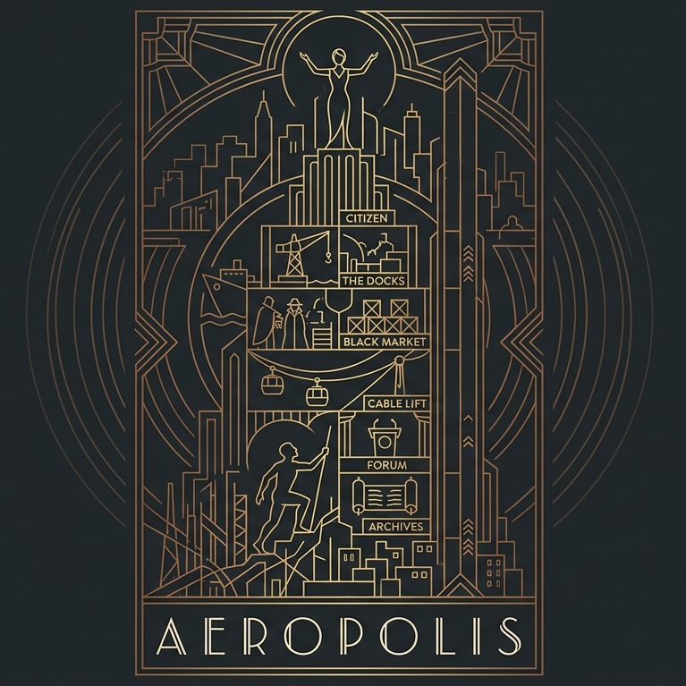

Aeropolis
One city on the edge of revolution, two characters per player, 2–4 players.

You play both sides: a Citizen at the top of the Spire, an Outcast at its base. Each turn, take a card and tuck it
above or below one of your characters: that side activates, every card in it. Send troops into the city, win its
Uprisings and hold its key locations: that is how your Outcast climbs. When your two characters meet, the game ends
after that round. You score the heights of both added together.
Components
- Board: the Spire (heights 1 to ) and the five city locations.
- Cards: Citizen cards, Outcast cards, characters, Uprisings. Schemes are cards from the decks, kept face down.
- Per player (4 colours): 2 pawns (Citizen, Outcast), troops, Arms (single tokens, so they can be committed in a closed fist), and 3 tokens for each of Papers, Secrets and Stims (1 on one face, 2 on the other: 0 to 6).
- A first-player marker.
Setup
- Choose a first player.
- Deal each player 1 Citizen and 1 Outcast character at random; place them side by side. Advanced: snake draft instead. Lay out all characters face up. In turn order, each player takes one; then in reverse order (the last player takes twice in a row), each takes one of the other kind.
- Each player: Citizen pawn on Spire (marked on the board), Outcast pawn on 1; ; troops in supply. Then apply your characters' setup (see Characters).
- Shuffle the Citizen and Outcast decks. Reveal cards from each: the row.
- Shuffle the Uprising deck and draw : the game lasts at most that many rounds. Reveal the first.
Round
- Starting with the first player, each player takes 1 turn, twice around the table.
- Resolve the Uprising, then Control, then Catch-up (see Uprising and City).
- The first player passes left. Reveal the next Uprising.
Turn
- Recruit: take 1 card from the row and pay its cost in goods; for each good you lack, Sink your Citizen 1 instead. Refill the row from the same deck. Tuck the card above or below its own character (Citizen cards go to the Citizen, Outcast cards to the Outcast), then activate that side.
- If you cannot afford any card in the row, take 1 good of your choice instead.
Empty deck: shuffle its discards into it.
Sides
Each character has 2 sides: cards tucked above it and cards tucked below it. A card tucked above shows only its top strip;
below, only its bottom strip. A side holds strips: tucking another discards its oldest.
Activate: resolve every effect shown on the side, on its strips and on the character, once each, in the order you choose. An effect with "→" is optional: pay the left part to get the right part.
Street Run
The Outcast's top strip (Street) runs the street. Your heat limit is the number on that strip, plus every 🔥 strip
resolved before it in the same activation. Choose the Citizen or the Outcast deck, then draw from it one card at a time.
Each card gives the goods of its cost and adds its printed heat; free cards give nothing and run hot.
- Stop whenever you like and take the goods.
- If your total heat goes over your limit, you are caught: you gain nothing.
- After drawing a card, you may spend a Stim to discard it; you must then draw again.
- Either way, discard the drawn cards. Citizen cards give mostly Secrets and Papers; Outcast cards mostly Stims, Papers and Arms.
City
Five locations, in the lower city, the upper city, or both (the Cable Lift). A troop icon says where the troop goes: any
location of that city. Troops stay until they are lost or moved; "Move" goes to any location, and you may move fewer.
With an empty supply, a troop effect does nothing.
Control: after each Uprising, the player with the most troops at a location takes its reward. Tie: nobody. At the Forum and the Cable Lift, the controller then loses 1 troop there (upkeep).
Catch-up: then the player with the lowest score (all of them, if tied) sends 1 free troop to the lower city, from their supply.
| Location | City | Control | Upkeep |
|---|
Uprising
Scheme (a Council strip effect, and the Archives reward): look at the top card of each deck. Place 1 face down in front of you, the other at the bottom of its deck. Its Scheme value (+2, +3 or ×2) stays hidden until an Uprising.
- Each Uprising is fought at its location(s). Only players with troops there take part.
- Each fighter secretly commits any number of their Arms. Then all fighters reveal them, together with all their Schemes (not optional).
- Strength = (your troops there + Arms committed), doubled for each ×2 Scheme, + your +N Schemes. Strongest gets the first reward, next gets the second. Tie: the end-of-game tie-break (Arms left after committing, then Stims, Secrets, Papers), then turn order.
- Every fighter, winner included, loses 1 troop at each of the Uprising's locations where they have one (back to supply). Fighters discard their Schemes and committed Arms; the others keep their Schemes.
Spire
- Heights go from 1 to : a rise above the top is lost; you cannot pay a cost that would sink your Citizen below 1.
- When your Outcast is level with or above your Citizen, they meet.
End
- When any player's characters meet, the round is still played to its end: the remaining turns, the Uprising, Control and Catch-up. Then the game ends. Otherwise it ends after round .
- Score: the heights of your Citizen and Outcast added together. Tie: most Arms, then Stims, then Secrets, then Papers.
Characters
A character's own strips are the base of both its sides. The Councillor and the Hustler are the plain ones;
the others trade something for a specialty.
| Character | Is a | ▲ Top strip | ▼ Bottom strip | Setup |
|---|
Icons
Goods are public. Every good also pays card costs. You hold at most of each good: any extra is lost.
Cards
| Card | Deck | Cost | Heat | Scheme | Copies | Top strip | Bottom strip |
|---|